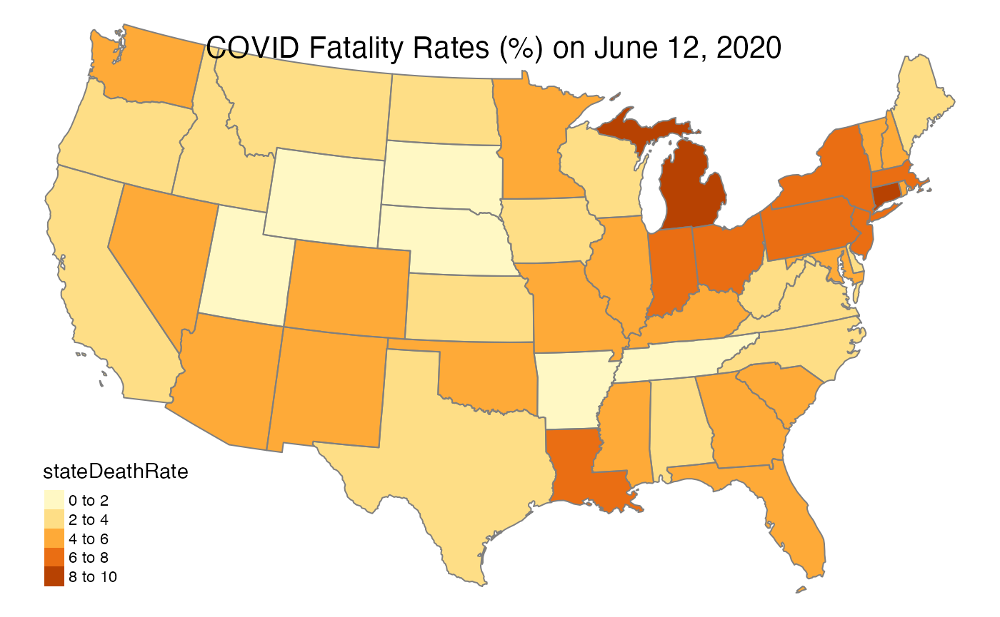
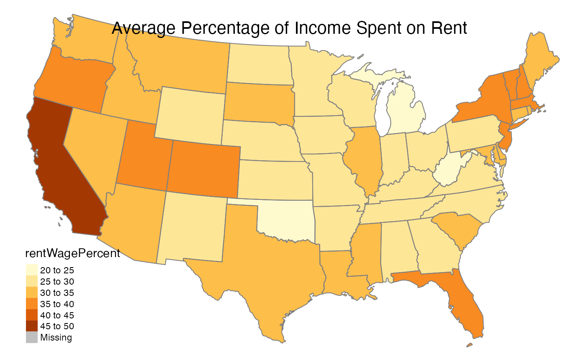
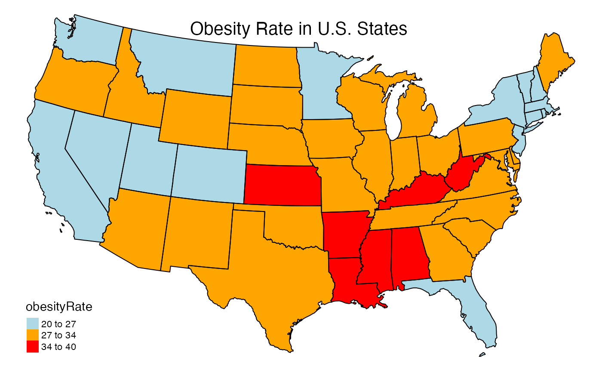
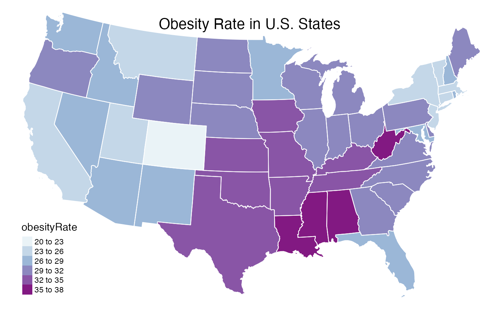
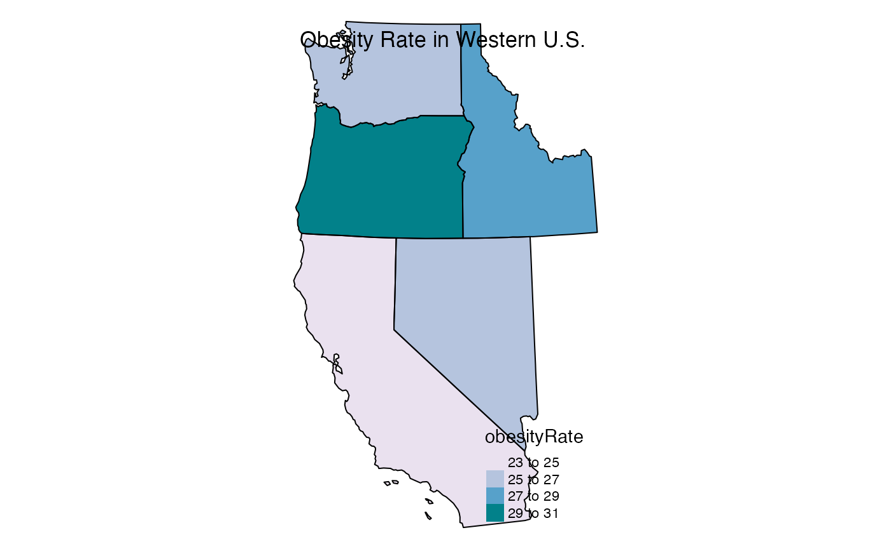

vignettes/articles/Creating_State_Maps.Rmd
Creating_State_Maps.RmdThe goal of this document is to introduce the stateMap() function in the MazamaSpatialPlots package. It demonstrates default usage and customizations using the stateMap() function’s arguments.
The stateMap() function requires two forms of state-level data. First is a Spatial Polygons Data Frame (SPDF) containing state level polygons. The SPDF must include the variable stateCode in it’s @data slot. The default SPDF is “USCensusStates_02”, which part of the package data. Higher or lower resolution US Census state SPDFs can be installed with:
library(MazamaSpatialUtils)
setSpatialDataDir('~/Data/Spatial') # default directory for spatial data
installSpatialData('USCensusStates_02')The second required form of data is a regular dataframe that contains the variable stateCode as well as a variable of interest. The variable of interest from this dataset is indicated using the parameter argument. This parameter is used to determine the colors of states in the generated chloropleth map.
The next three examples demonstrate obtaining, summarizing, and mapping state-level data. The first two use example dataframes from the package and the third uses MazamaCoreUtils::html_getTable() to easily pull data from a website.
example_US_stateObesity
In this example, the package-internal dataframe, example_US_stateObesity, is used directly:
library(MazamaSpatialPlots) stateMap( data = example_US_stateObesity, parameter = 'obesityRate', state_SPDF = "USCensusStates_02", # the default value title = "Obesity Rate in U.S. States" )
example_US_countyCovid
In this example, the county-level package dataframe, example_US_countyCovid, is aggregated by state and then used:
library(dplyr) example_US_stateCovid <- example_US_countyCovid %>% dplyr::group_by(stateCode) %>% dplyr::summarise(stateCases = sum(cases), stateDeaths = sum(deaths)) %>% dplyr::mutate(stateDeathRate = 100*stateDeaths/stateCases ) %>% dplyr::select(c("stateCode", "stateCases", "stateDeaths", "stateDeathRate")) stateMap( data = example_US_stateCovid, parameter = 'stateDeathRate', title = "COVID Fatality Rates (%) on June 12, 2020" )

State-level data of interest can be found online and easily scraped using MazamaCoreUtils::html_getTable() to parse all table elements from a website. Using html_getTable() in conjunction with stateMap() makes it very easy to extract and visualize data from the internet.
URL <- "https://www.patriotsoftware.com/blog/accounting/average-cost-living-by-state/" livingCostData <- MazamaCoreUtils::html_getTable(URL, header = TRUE) livingCostData <- livingCostData %>% dplyr::mutate( stateCode = MazamaSpatialUtils::US_stateNameToCode(.data$"State"), avgAnnualWage = as.numeric(gsub('[$,]', '', .data$"Annual Mean Wage (All Occupations)")), avgMonthlyRent = as.numeric(gsub('[$,]', '', .data$"Median Monthly Rent")), rentWagePercent = 100*12*avgMonthlyRent/avgAnnualWage, .keep = "none" ) stateMap( data = livingCostData, parameter = 'rentWagePercent', title = "Average Percentage of Income Spent on Rent" )

In the above examples, the stateMap() inputs data, parameter, state_SPDF, and title are used to create maps. This section will demonstrate how to use the other input parameters to customize your map.
The palette, breaks, and stateBorderColor parameters dictate the coloring of your map. Colors are defined with palette and the distribution of color across the map is defined with breaks. As expected, stateBorderColor defines the state border color.
To make the most of these parameters, see the following references for R colors and palettes:
In this example, breaks is used to create a coarser coloring scheme and palette is used to customize the exact color for each obesity rate level. The vector of breaks will be one longer than the vector of colors.
stateMap( data = example_US_stateObesity, parameter = 'obesityRate', palette = c("lightblue", "orange", "red"), breaks = c(20, 27, 34, 40), stateBorderColor = "black", title = "Obesity Rate in U.S. States" )

In this example, breaks is used to create a more detailed coloring scheme and the RColorBrewer blue to purple color palette name is chosen.
stateMap( data = example_US_stateObesity, parameter = 'obesityRate', palette = 'BuPu', breaks = seq(20, 38, 3), stateBorderColor = 'white', title = "Obesity Rate in U.S. States" )

The conusOnly and stateCode parameters define which states will be included in the map. If stateCode is defined, then conusOnly will be ignored. If stateCode is not defined, then conusOnly specifies whether the map is limited to the continental US. When conusOnly = FALSE, the continental U.S., Alaska, Hawaii, and U.S. Territories will be included.
This example builds upon the previous example and includes stateCode specification to create a map of Western states.
stateMap( data = example_US_stateObesity, parameter = 'obesityRate', palette = 'PuBuGn', breaks = seq(23, 31, 2), stateCode = c("CA", "NV", "OR", "WA", "ID"), stateBorderColor = 'black', title = "Obesity Rate in Western U.S." )

The following example uses conusOnly = FALSE.
The stateMap() function allows us to create attractive maps with a minimum of effort. When used alongside MazamaCoreUtils::html_getTable(), U.S. state data can be procured and visualized in very few lines of code. The combination of these two functions provides a great deal of flexibility. The html_getTable() function opens up an endless source of data from the internet while stateMap() can create highly customized visualizations through direct inputs and by harnessing the functionality of the tmap package.